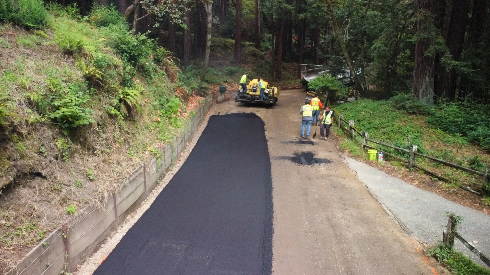
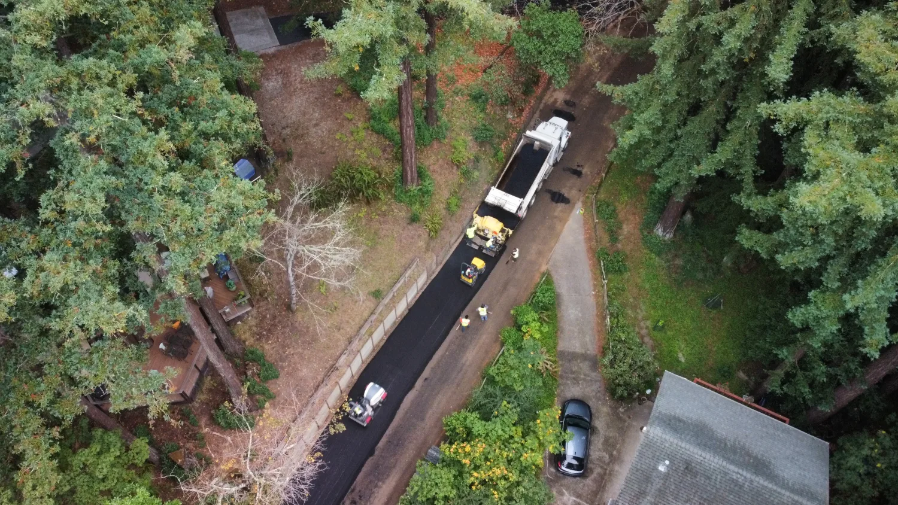

Services
Asphalt paving built on a sound base
New asphalt for driveways, commercial parking lots, private roads, and pathways, built in a fixed order: base, tack coat, lay, then compaction.
JC Grading paves asphalt across the South Bay and Peninsula. We check the base before anything is quoted, because the base decides how long the surface lasts.
Surfaces
Driveways, parking lots, private roads, pathways
Build order
Base, tack coat, lay, compaction in passes
First step
Base check before any quote
What it covers
What we do
- Residential driveways, new installs and replacements
- Commercial parking lots, with drainage and striping available on request
- Private roads, HOA lots, and multi-unit property surfaces
- Asphalt overlays where the base is still sound
- Pathways, access roads, and service lanes
Who it is for
This is for you if
- You need a new driveway or parking lot
- Your driveway has cracks or patches that keep coming back
- You have been told to overlay but are not sure the base is sound
- You want the base checked before anything is quoted
How we do it
How a paving job is built
- 1. Base checkSoft spots, settling, and drainage problems start underneath, so the base is looked at first.
- 2. Aggregate baseThe aggregate base is built to spec. A weak base shows up later as cracks and dips.
- 3. Tack coatTack coat bonds the new asphalt to the layer below it.
- 4. Machine-laid asphaltAsphalt is machine-laid at the right temperature.
- 5. Compaction in passesCompaction in passes gives uniform density. We also handle transitions to concrete, curb cuts, and drainage slopes.
Signs the base has failed
Cracks running in parallel lines, soft spots that flex underfoot, water pooling instead of draining off, or crumbling edges.
These usually mean the base has shifted or failed, not just the surface layer. An overlay will not fix that.
Project proof
Recent work


Questions
Common questions
Can you overlay my existing asphalt?
Yes, where the base is still sound. If it has failed, we tell you upfront rather than cover it with fresh pavement.
What happens if the base has failed?
We cut out the affected section cleanly, repair the base, and repave with proper tack and compaction. Patching over a failed base does not solve the problem.
Do you include striping?
Striping is available on request for parking lots and driveways.
Do you work where asphalt meets concrete?
Yes. We handle transitions to concrete, curb cuts, and drainage slopes as part of the paving work.
Get your estimate
Send the project address, the surface, and the size. We will check the base before we quote.
Related services